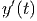

Retornemos ao problema de valor inicial (9.1) dado por:
O Método de Euler aplicado à solução desse problema consiste em aproximar a derivada  por um esquema de primeira ordem do tipo

 é o passo do método, que consideraremos uma constante. Assim temos
(9.3) se transforma em:
é o passo do método, que consideraremos uma constante. Assim temos
(9.3) se transforma em:
Definimos, então,  e
e  como a aproximação para
como a aproximação para  e
e  como a aproximação para
como a aproximação para  produzida pelo Método de Euler. Assim, obtemos
produzida pelo Método de Euler. Assim, obtemos
 é a condição
inicial;
é a condição
inicial;  pode ser obtido de
pode ser obtido de  ;
;  , de
, de  e assim por diante,
calculamos o termo
e assim por diante,
calculamos o termo  apartir do anterior
apartir do anterior  .
=======
src="main4148x.png" alt="y(n) " class="math" > apartir do anterior
.
=======
src="main4148x.png" alt="y(n) " class="math" > apartir do anterior  .
>>>>>>> 62bea6a0d0a1d3eca740d93a452697554da972de
.
>>>>>>> 62bea6a0d0a1d3eca740d93a452697554da972de
Exemplo 9.1.1. Retornemos ao o problema de valor inicial do exemplo (9.2):

Cuja solução é  . O método de Euler aplicado a este problema
produz o seguinte esquema:
. O método de Euler aplicado a este problema
produz o seguinte esquema:


 , a solução aproximada pelo Método de Euler é
, a solução aproximada pelo Método de Euler é

 , mas se
, mas se  é pequeno, a aproximação é boa,
=======
src="main4154x.png" alt="t = (k - 1 )h " class="math" >, a solução aproximada pelo Método de Euler é
é pequeno, a aproximação é boa,
=======
src="main4154x.png" alt="t = (k - 1 )h " class="math" >, a solução aproximada pelo Método de Euler é

 , mas se
, mas se  é pequeno, a aproximação é boa,
>>>>>>> 62bea6a0d0a1d3eca740d93a452697554da972de
pois
é pequeno, a aproximação é boa,
>>>>>>> 62bea6a0d0a1d3eca740d93a452697554da972de
pois

O método de Euler foi o primeiro método que estudamos e sua principal virtude é a simplicidade. Outros métodos, no entanto, podem apresentar resultados superiores. Vamos apresentar agora uma pequena modificação ao Método de Euler, dando origem a um novo método chamado de Método de Euler Modificado ou Método de Euler Melhorado.
No método de Euler, usamos a seguinte iteração:

A ideia do método de Euler Melhorado é substituir a declividade  pela média aritmética entre
pela média aritmética entre  e
e  , isto é, as declividades
avaliadas no início e no fim do intervalo
, isto é, as declividades
avaliadas no início e no fim do intervalo ![[t(k),t(k+1)]](main4322x.png) .
.
No entanto, não dispomos do valor de  antes de executar o passo.
Assim aproximamos esta grandeza pelo valor produzido pelo Método de Euler
original:
antes de executar o passo.
Assim aproximamos esta grandeza pelo valor produzido pelo Método de Euler
original:
De posse desta aproximação, calculamos a média aritmética e, finalmente, com esta média, realizamos o passo do Método de Euler Melhorado. O processo iterativo de Euler Melhorado é, portanto, dado por:

Podemos obter a solução exata desta equação usando o método de separação de variáveis e o método das frações parciais. Para tal escrevemos:
 |
O termo  pode ser decomposto em frações parciais como
pode ser decomposto em frações parciais como  pode ser decomposto em frações parciais como
pode ser decomposto em frações parciais como  e
chegamos na seguinte equação diferencial:
e
chegamos na seguinte equação diferencial:
 |
Integrando termo-a-termo, temos a seguinte equação algébrica relacionando  e
e  :
:
 |
Onde  é a constante de integração, que é definida pela condição inicial,
isto é,
é a constante de integração, que é definida pela condição inicial,
isto é,  em
em  . Substituindo, temos
. Substituindo, temos  . O que resulta
em:
. O que resulta
em:
 |
Equivalente a =======
Vimos que em todas as estimativas de erro que derivamos, o erro depende do tamanho do intervalo de integração. Uma estratégia para reduzir o erro consiste em particionar o intervalo de integração em diversos subintervalos menores:
 |
onde  ,
,  e
e  , sendo
, sendo  o número
de subintervalos da partição do intervalo de integração. Depois, aplica-se um
método simples de integração em cada subintervalo.
o número
de subintervalos da partição do intervalo de integração. Depois, aplica-se um
método simples de integração em cada subintervalo.
A regra composta dos trapézios assume a seguinte forma:
![∫ b ∑n ∫ xi+1
f(x)dx = f(x)dx
a i=1 xi
∑n xi+1 − xi
≈ ---------[f (xi) + f (xi+1)]
i=1 2](main3825x.png)
 , temos:
, temos: ![∫ b h N∑i
f (x)dx ≈ -- [f(xk) + f(xk+1)]
a 2 k=1
h-
= 2 [f (x1) + 2f (x2) + 2f(x3) + ⋅⋅⋅ + 2f (xNi) + f (xNi+1)]
N∑i
= h-[f (x1) + f (xN +1)] + h f(xi)
2 i i=2](main3827x.png)
O código Scilab abaixo é uma implementação do método do trapézio composto para calcular: >>>>>>> 2ce5bba22e77a9b0d17e57fb0d2efc8029204145
 |
e
 |
Colocando o termo  em evidência, encontramos:
em evidência, encontramos:
 | (9.7) |
E, finalmente, encontramos a solução exata dada por  .
.
Vejamos, agora, o esquema iterativo produzido pelo método de Euler:

Para fins de comparação, calculamos a solução de 9.1.2 e de (??) para alguns
valores de  e de passo
e de passo  e resumimos na Tabela 9.1.
e resumimos na Tabela 9.1.
 |  |  |  |
|
 |  |  |  |
|
 |  | >>>>>> 62bea6a0d0a1d3eca740d93a452697554da972de
class="td11">  |  |
|
 |  | >>>>>> 62bea6a0d0a1d3eca740d93a452697554da972de
class="td11">  |  |
|
 |  | >>>>>> 62bea6a0d0a1d3eca740d93a452697554da972de
class="td11">  |  |
|
 | | >>>>>> 62bea6a0d0a1d3eca740d93a452697554da972de
class="td11">  |  |
|
No exemplo a seguir, apresentamos um problema envolvendo uma equação
não-autônoma, isto é, quando a função  depende explicitamente do
tempo.
depende explicitamente do
tempo.
Exemplo 9.1.3. Resolva o problema de valor inicial
 .
=======
src="main4205x.png" alt=" y′ = - y + t
y(0) = 1,
" class="math-display" >
.
=======
src="main4205x.png" alt=" y′ = - y + t
y(0) = 1,
" class="math-display" >
 .
>>>>>>> 62bea6a0d0a1d3eca740d93a452697554da972de
.
>>>>>>> 62bea6a0d0a1d3eca740d93a452697554da972de
O esquema recursivo de Euler fica:
Comparação ======= src="main3828x.png" alt="∫ b n f (x )dx = h-[f(x1) + f(xn+1)] + h∑ f (xi) + O (h3), a 2 i=2 " class="math-display" >
onde  e
e  ,
,  . Os parâmetros de
entrada são: f o integrando definido como uma função no Scilab, a o limite
inferior de integração, b o limite superior de integração, n o número de
subintervalos desejado. A variável de saída é y e corresponde a aproximação
calculada de
. Os parâmetros de
entrada são: f o integrando definido como uma função no Scilab, a o limite
inferior de integração, b o limite superior de integração, n o número de
subintervalos desejado. A variável de saída é y e corresponde a aproximação
calculada de  .
.
Já a regra composta de Simpson assume a seguinte forma:
![∫ b ∑n ∫ xk+1
f(x)dx = f (x )dx
a k=1 xk
∑n xx+1 − xk[ ( xk+1 + xk ) ]
≈ ---------- f (xk) + 4f ---------- + f(xk+1)
k=1 6 2](main3833x.png)
 ,
,  e
e  ,
sendo
,
sendo  o número de subintervalos da partição do intervalo de integração.
Podemos simplificar o somatório acima, escrevendo:
>>>>>>> 2ce5bba22e77a9b0d17e57fb0d2efc8029204145
o número de subintervalos da partição do intervalo de integração.
Podemos simplificar o somatório acima, escrevendo:
>>>>>>> 2ce5bba22e77a9b0d17e57fb0d2efc8029204145
![|--|---------------------|---------------|----------------|
|t | Exato |Euler h = 0,1 |Euler h = 0,01 |
|--|---------------------|---------------|----------------|
|0 | 1 | 1 | 1 |
<<<<<<< HEAD
|--|---------------------|---------------|----------------|
|1 | 2e-1 ≈ 0,7357589 | 0,6973569 | 0,7320647 |
|--|---------------------|---------------|----------------|
|2-|2e-2-+-1-≈-1,2706706-|---1,2431533----|---1,2679593----|
| | -3 | | |
-3--2e---+-2-≈-2,0995741-----2,0847823--------2,0980818-----
=======
|--|-----1---------------|---------------|----------------|
|1-|--2e---≈-0,7357589---|---0,6973569----|---0,7320647----|
| | -2 | | |
|2-|2e---+-1-≈-1,2706706-|---1,2431533----|---1,2679593----|
| | -3 | | |
|3-|2e---+-2-≈-2,0995741-----2,0847823--------2,0980818-----
| |
>>>>>>> 62bea6a0d0a1d3eca740d93a452697554da972de](main4208x.png) |
No exemplo 9.1.4, mostramos como o Método de Euler pode ser facilmente estendido para problemas envolvendo sistemas de equações diferenciais..
Exemplo 9.1.4. Escreva o processo iterativo de Euler para resolver numericamente o seguinte sistema de equações diferenciais
 e
e  .
.
Para aplicar o Método de Euler a um sistema, devemos encarar as diversas incógnitas do sistema como formando um vetor, neste caso, escrevemos:

Exemplo 9.1.5. Escreva o problema de valor inicial de segunda ordem dado por
A fim de transformar a equação diferencial dada em um sistema de equações
de primeira ordem, introduzimos a substituição , de forma que obteremos
o sistema:
 , de forma que obteremos
o sistema:
, de forma que obteremos
o sistema: 

Podemos reescrever este mesmo processo iterativo da seguinte forma:

 e
e  são variáveis auxiliares que representam as inclinações e devem
ser calculadas a cada passo. Esta notação é compatível com a notação usada nos
métodos de Runge-Kutta, uma família de esquemas iterativos para aproximar
problemas de valor inicial, da qual o Método de Euler e o Método de Euler
Melhorado são casos particulares. Veremos os métodos de Runge-Kutta na seção
9.5.
>>>>>>> 8ffe51d4bbc8f1e500cc9c435f05cb1c6f0ffef3
são variáveis auxiliares que representam as inclinações e devem
ser calculadas a cada passo. Esta notação é compatível com a notação usada nos
métodos de Runge-Kutta, uma família de esquemas iterativos para aproximar
problemas de valor inicial, da qual o Método de Euler e o Método de Euler
Melhorado são casos particulares. Veremos os métodos de Runge-Kutta na seção
9.5.
>>>>>>> 8ffe51d4bbc8f1e500cc9c435f05cb1c6f0ffef3
======= src="main3838x.png" alt="∫ [ n− 1 n ] b f(x)dx ≈ h- f(x ) + 2∑ f(x ) + 4 ∑ f(x ) + f(x ) + O (h5 ) a 3 1 i=1 2i+1 i=1 2i 2n+1 " class="math-display" >
onde, agora,  ,
,  ,
,  .
.
O código Scilab abaixo é uma implementação do método de Simpson composto para calcular:
![∫ b [ n∑−1 ∑n ]
f (x )dx = h- f (x1 ) + 2 f (x2i+1) + 4 f (x2i) + f(x2n+1) + O (h3),
a 3 i=1 i=1](main3842x.png) |
onde  e
e  ,
,  . Os parâmetros
de entrada são: f o integrando definido como uma função no Scilab, a o limite
inferior de integração, b o limite superior de integração, n o número de
subintervalos desejado. A variável de saída é y e corresponde a aproximação
calculada de
. Os parâmetros
de entrada são: f o integrando definido como uma função no Scilab, a o limite
inferior de integração, b o limite superior de integração, n o número de
subintervalos desejado. A variável de saída é y e corresponde a aproximação
calculada de  .
.
Exemplo 9.3.1. Calcule numericamente a integral

 .
.
Solução.
 | Ponto Médio | Trapézios | Simpson |
| 1 | 5,4365637 | 218,3926 | 76,421909 |
| 2 | 21,668412 | 111,91458 | 51,750469 |
| 3 | 31,678746 | 80,272022 | 47,876505 |
| 6 | 41,755985 | 55,975384 | 46,495785 |
| 12 | 45,137529 | 48,865685 | 46,380248 |
| 24 | 46,057757 | 47,001607 | 46,372373 |
| 48 | 46,292964 | 46,529682 | 46,37187 |
| 96 | 46,352096 | 46,411323 | 46,371838 |

Em construção ... Gostaria de colaborar na escrita deste livro? Veja como em: